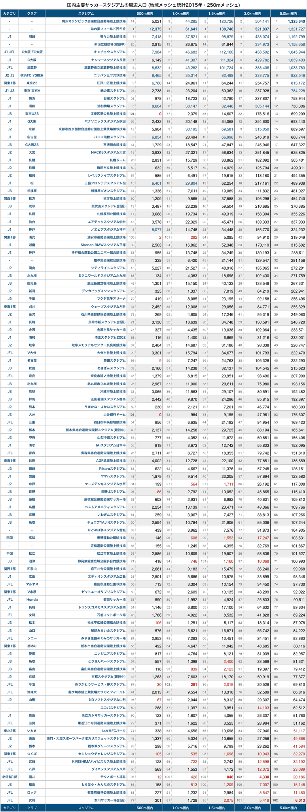

地域メッシュ統計のデータを用いて国内の主要サッカースタジアムの周辺人口を算出しました。
まず予め断っておきますが、これはただの遊びです。
各スタジアムの周辺人口を求めて、求めたデータから何かを評価したり結論を導くようなものではありません。
スタジアムの周辺人口を求めました。以上。という内容の記事です。
人口データ
国勢調査 2015年 5次メッシュ(250mメッシュ) その1 人口等基本集計に関する事項
- URL: https://www.e-stat.go.jp/gis/statmap-search?page=1&type=1&toukeiCode=00200521&toukeiYear=2015&aggregateUnit=Q&serveyId=Q002005112015&statsId=T000876
- 公開日: 2018年1月4日
- データ取得日: 2018年4月10日
人口の求め方
QGISによるデータ分析(4) 合同会社 緑IT事務所を参考にしています。
- まず各メッシュの中心点を作成します。
- 次に各スタジアムからの距離円(厳密にはスタジアムのピッチのセンターマークからの距離円)を作成します。
- 最後に、距離円に含まれる点を抽出し、点の集合から人口を算出します。
国内主要サッカースタジアム
- J1〜JFLのホームスタジアム
- 地域リーグで特定クラブのホームスタジアムと言える会場
- 建設中、計画中、構想中のスタジアム
広告
結果&可視化
国内主要スタジアムからの500m圏内、1.0km圏内、1.5km圏内、3.0km圏内、5.0km圏内を算出しました。
MAP画面で選択したスタジアム周辺の人口地図を表示できます。
表

CSV形式のものをgistに上げています。
あとがき
500m, 1.0km, 1.5km圏は徒歩圏をイメージしています。
3kmくらい平気で歩くサッカーファンは多いですが、一般的に「徒歩で行く」選択肢になりうるのは1.5km圏が限界かなという感じがします。
3.0km圏は自転車圏をイメージしています。自転車でもっと長い距離を行き来する人も多いですが、一般的に苦に感じることなく自転車で行ける範囲は3kmくらいかなと思います。
ただし山や川など地形的な制約もあるので、一概に3.0km圏人口を持って自転車圏と言うことはできません。例えば保土ヶ谷から三ツ沢までは3kmほどですが自転車で行くのは大変ですよね。
5.0km圏は特にこれといった意味はないです。参考としてご覧ください。
繰り返しますがこれはただの遊びです。
この結果を持ってどうのこうの論じるのは見る側に委ねるので、そこのところ宜しくお願いします。
広告